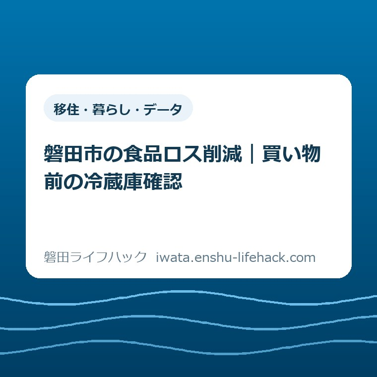
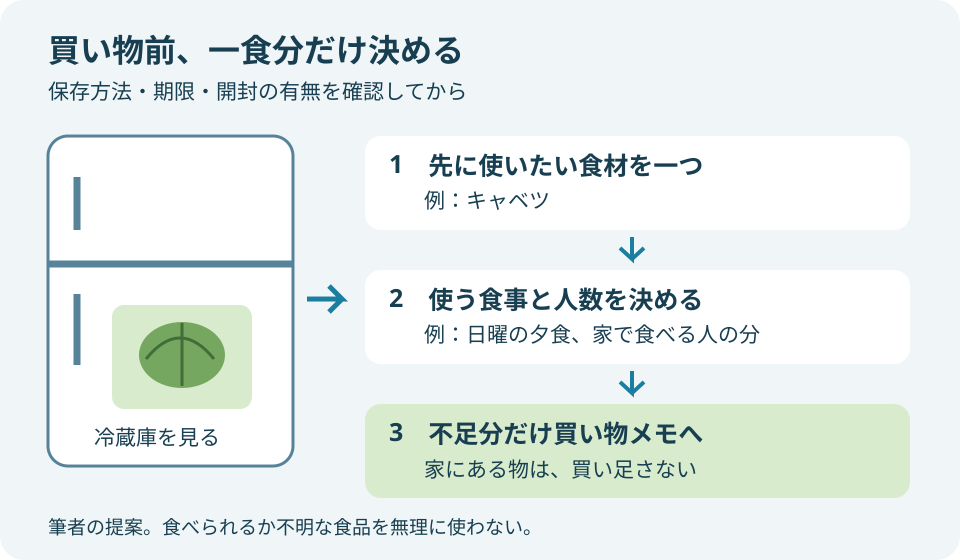
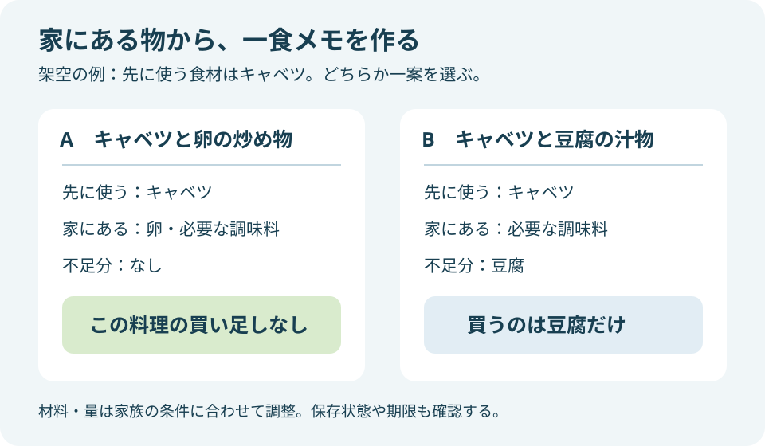

移住・暮らし・データ
磐田市の食品ロス削減｜買い物前の冷蔵庫確認

この記事の要点
Q. まとめ買いの前、食品ロスを減らすには何をすればいい？
A. 買い物前に冷蔵庫を見て、先に使いたい食材を一つ選び、使う食事と足りない物だけをメモします。磐田市は在庫確認と、使う予定のない食品を買わないことを勧めています。保存方法や期限表示を確認し、食べられるか不明な物を無理に使う必要はありません。今日は一食分からで十分です。
献立を考える人は、買い物の前から働いている
休日のまとめ買いを担う人は、店に着く前から仕事をしています。平日に家で食べる人数を考え、冷蔵庫を思い出し、予算と荷物の量を合わせる。子どもの好みや帰宅時刻まで考えると、食品ロスを減らすための確認をもう一つ足す余裕がない日もあります。
「買いすぎないで」と言われても、毎日店に寄れないから週末に買う家庭もあるはずです。買い物の回数を減らす段取りには、移動と時間を節約する意味があります。まとめ買いそのものを失敗扱いすると、食事を用意している人がすでに払っている手間を見落とします。
この記事は大石浩之（磐田市／不動産業）が、2026年9月27日に確認した公式情報をもとに書いています。制度や取り組みの利用条件は個別に異なり、食品の扱いも表示と保存状態で変わります。一律の保存日数や節約額を示す記事ではありません。
私が提案するのは、出発前に「先に使う食材」を一つだけ決める方法です。一週間分の献立を完成させる必要はありません。冷蔵庫にある物から一食の起点を作れば、その食事のために買い足す物を絞れます。以下のメモや手順は、市の必須ルールではなく私の提案です。
10月の前に確認したい、磐田市の案内
磐田市の「食品ロス削減」は、2026年4月24日更新のページです。買い物に出る前の冷蔵庫確認と、使う予定のない食品を買わないことを案内しています。食品ロスとは、まだ食べられるのに捨てられる食品のことです。確認元は磐田市「食品ロス削減」です。
消費者庁の「2025年食品ロス削減月間」では、10月を食品ロス削減月間、10月30日を食品ロス削減の日と案内しています。参照したのは2025年版です。2026年の催しや募集内容が同じだと読み替えず、この記事では買い物を見直す季節のきっかけとして扱います。
10月が来るから台所を一度に変える、と構えなくてよいと私は考えます。9月27日の買い物で使い切りたい物を一つ選び、次の買い物で続けやすかったかを見る。そのくらいの間隔なら、平日に起きた予定変更も織り込めます。月間の開始日を待つ必要もありません。
市の案内で見落としたくないのは、食品を手前から取るのは「すぐに食べる予定があるもの」という条件付きの勧めだという点です。まとめ買いの全部を同じ期限で選ぶ話ではありません。日曜の昼に食べる物と、平日用に買う物では、店頭で確かめる食事の予定が違います。
冷蔵庫確認は、一つの食材から一食へつなぐ
買い物前の冷蔵庫確認では、在庫の名前だけでなく、いつの食事に使うかを一つ結びます。私は「何があるか」を全部書くより、「この食材をこの食事に使う」と決めるほうが、買い物メモに移しやすいと考えます。確認が棚の片付けに広がったら、買い物の準備とは分けます。
最初に目を向けるのは、すでに開けた食品や、先に使いたいと気になっていた野菜などです。ただし、残っているから必ず使うとは決めません。表示の保存方法、期限、開封の有無を確かめます。食べられるか不明な物を、食品ロスを減らすためだけに料理へ入れないでください。
消費者庁の食品ロス削減ガイドブック2025の期限表示の解説では、期限は未開封で、定められた方法に従って保存した場合のものとしています。開封後は、消費期限と賞味期限のどちらでも速やかに消費する必要があります。袋にある日付だけを、開けた後の保証にはできません。
次に決めるのは料理名より、食べる場面です。「日曜の夕食に家族で」「月曜の朝に食べる人の分」のように考えます。食材だけを先に決めても、その食事を家で食べなければ使う機会がありません。食べる人数が不明なら、一週間分を決めず、予定が分かる一食に絞ります。
最後に、家にある材料で作れるかを見ます。足りない物があれば、その物だけを買い物メモへ移します。新しいレシピを探して材料を何種類も増やすと、使い切るための買い物が別の在庫を生むこともあります。食べ慣れた料理の中で使えるかを先に考えるのが、私の提案です。

一食分のメモなら、買わない物も見える
一食分の買い物メモは、「先に使う物」「家にある物」「買う物」に分けると整理できます。以下は実際の家庭の記録ではなく、段取りを示す架空の例です。食材の組み合わせは家族の好みや食事上の条件に合わせ、量は食べる人数に合わせて変えてください。
例えば、先に使いたいキャベツがあり、卵も家にあるとします。日曜の夕食に炒め物を作る予定なら、キャベツと卵は買い足す欄から外せます。ほかに必要な物が家にそろっていれば、その料理のための購入はありません。「何か買って完成」だけが買い物の成果ではないのです。
別の例として、キャベツを使う汁物に豆腐を加えたい場合を考えます。豆腐の在庫がなければ、食べる人数に合う量だけを買う欄へ書きます。炒め物と汁物の両方を作る必要はありません。一つの食事の選択肢を比べているので、図の例もどちらか一案として見てください。
メモには「野菜」ではなく「キャベツは家にある」と書くと、代わりに買い物へ行く家族にも伝わります。足りない物だけの一覧では、途中で気が変わって同じ野菜を買うことも考えられます。すでにある物を一つ残すのは、確認した結果を買う人へ渡すためです。
予算も同じ順序で見直せます。ただし、食品を一つ買わなかったから月に何円節約できる、とここでは計算しません。価格、もともとの購入量、食べ残す量が家庭で違うからです。レシートを使うなら、まず「家にあるため買い足さなかった物」を確認する程度で十分だと考えます。

店では、安さと使う予定を一緒に見る
まとめ買いの日に値引き品や大容量品を選ぶときは、価格を見るのと同時に使う食事を確かめます。買い物メモから外れる食品でも、家で食べる予定が具体的なら候補になります。反対に「安いから何かに使う」だけなら、私は一度売り場に置いて考える方法を勧めます。
大容量品は、家族がその量を使うなら選択肢になります。一方、小さい包装は単価が高くても、その食事に必要な量へ合わせやすい場合があります。どちらが得かは店頭の価格と使う量次第です。家族の人数だけで大容量を選ばず、その週に家で食べる回数も考えます。
買い物中に家族から夕食不要の連絡が来たら、メモの量を減らして構いません。出発前に決めた献立は、守り抜く約束ではなく、売り場で迷う回数を減らす下書きです。変更を失敗と扱わないほうが、予定に合わない食材を持ち帰ることを避けやすいと私は考えます。
市の手前取りの案内を実践するなら、まずその食品をすぐに食べるかを決め、商品の表示を確認します。買う人だけが食べる時刻を知っていると、帰宅後に別の家族が残してしまうかもしれません。「これは今日の昼に食べる分」と伝えるところまでを、一つの段取りにします。
良い点——家庭だけで抱えない入口がある
磐田市の案内の良い点は、食品ロス削減を気持ちの問題だけで終わらせず、買い物前の行動へ落としていることです。冷蔵庫を見るという入口なら、道具の購入やアプリの登録をせずに試せます。私の評価として、続けるための準備が軽いことには意味があります。
市は別の公式ページで、「食品ロス及びプラスチックごみの削減に向けた取組みに関する協定」を紹介しています。食品の割引販売や少量パックなどが事業者の取り組み例に挙げられ、各店の状況に応じた実施とされています。すべての参加店に同じ商品やサービスがあるという意味ではありません。
私は、店で買う量を選べることも、家庭の努力を支える条件だと考えます。献立担当に「使い切って」とだけ頼むより、必要な量に近い商品を選べるほうが動きやすい。少量パックを見つけたら、その日の必要量と値段で比べればよく、別の店を何軒も回ることまで課題にしなくてよいのです。
環境の話を親子で知る入口が欲しい場合は、エコフェスいわた2026の館内の選び方も参照できます。イベントに行くことと、台所で一つ試すことは別の選択肢です。参加できない家庭でも、買い物前の確認から始められます。
注文したい点——確認する人の仕事を増やさない
食品ロス削減の呼びかけに私が注文したい点は、在庫確認、献立、買い物、調理のすべてを一人に積み上げない説明です。市の案内を家庭で実行する場面では、誰が確認結果を使うのかまで決めないと、調べた人に追加の質問が戻り続けます。ここからは案内への私の意見です。
冷蔵庫の写真を撮る方法も、家族に見てもらえなければ撮影した人の仕事だけが増えます。全部を撮影して保存するより、「キャベツあり、買わない」の一文で済む日もあります。記録をきれいに残すことより、買い物をする人に必要な情報が届くことを優先したいと考えます。
使い切れなかったときも、担当者の注意不足という結論を急がないでほしい。急な外食、帰宅の遅れ、食べる人数の変更があれば、最初の予定は崩れます。家族で見るなら「誰が忘れたか」ではなく、「食べないことがいつ分かり、買う人に伝わったか」という順序が役に立ちます。
案内を生活の言葉へ置き換えるなら、「家族で食品ロスを減らす」の次に、具体的な役割が欲しいのです。例えば、買う人は在庫メモを見て、食べない人は予定を知らせる。調理担当が家族全員の予定を聞いて回る形だけにしない。私が減らしたいのは食材の無駄と、確認の往復です。
家族で分けるなら、返事を一つに絞る
家族へ冷蔵庫確認を頼むときは、「何か足りない物ある？」より、確認してほしい物を一つ指定すると答えを使いやすくなります。これは私の提案です。「豆腐があるか見て」と頼み、確認できたら有無を返す。何が必要かを考える仕事と、在庫を見る仕事を分けられます。
食品があるという返事だけでは、使う予定が重なる場合もあります。朝食用に残した卵を夕食で全部使う、といった行き違いを避けたいなら、「夕食に使ってよい分があるか」と聞きます。数量を細かく管理する前に、その食品が別の食事に使われる予定かを確かめる方法です。
子どもに関わってもらう場合も、食品が安全に食べられるかの判断を任せる必要はありません。「今日の夕食を家で食べるか」「この料理を食べたいか」の返事だけでも献立の材料になります。判断が要る確認と、家族が答えられる予定を分けるほうが、頼む内容を小さくできます。
家の確認事項を一つずつ分ける考え方は、磐田市の防災訓練に合わせた家族の確認でも扱っています。ただし、災害用の備蓄を普段の食事で使う場合は、必要な備えを切らさない管理が別に要ります。「在庫を減らす」を、家に食べ物を置かない目標にはしません。
対案・結論——出発前に使いたい食材を一つ選ぶ
今日できる一歩は、買い足す前に冷蔵庫を見て、先に使いたい食材を一つ決めることです。食べる予定につながる物を選び、足りない材料だけメモへ移します。整理収納用品を買うことや、在庫表を完成させることを、始めるための条件にはしません。
出発前に時間が取れなかった日は、覚えていない在庫を「ないはず」と決めつけない方法もあります。確認できる家族がいれば、その食品だけ聞く。確認できなければ、その日の食事に必要かで購入を考える。毎回完璧に確認できない前提で、同じ物を重ねて買う場面を一つ減らします。
帰宅後は、買った物を適切に保存し、その食事を作る人へメモの内容を伝えます。すでにある食材を使う予定が、買ってきた食品の陰に隠れないようにします。冷蔵庫内の置き場を変える場合も、商品の保存方法に従うことが先です。見つけやすさだけで置き場所を決めません。
食品を使った後の包装など、ごみの出し方を調べたいときは、磐田市のプラマークなし資源化の対象条件へ進めます。食品を使い切る段取りと、残った物を分別する条件は別の話です。今回の買い物では一食分、出し方で迷ったら該当する案内、と調べる範囲を分けます。
大石の視点——食材と一緒に、担う人の時間も守る
私は、食べ物を大切にする話で、献立を担う人の時間を粗末にしてはいけないと考えます。毎日の食事を回している人へ、正しさを理由に記録の仕事を増やすのは違う。減らすべきは食品の無駄であって、その人が休める時間ではありません。ここは家庭での体験談ではなく、家計と段取りを優先する私の意見です。
正直に言うと、冷蔵庫の全部を一覧にしたほうが重複購入を防げるのでは、という迷いもあります。ただ、一覧は作った後も更新する人が要ります。記録する手間に見合うかは家庭によって違い、私には一律に決められません。だから最初から全品の管理を勧めず、一食だけ試す形を選びます。
小さな商売の段取りを考える立場から見ても、確認した情報が次に動く人へ渡らなければ、その確認をやり直すことになります。台所でも、買う人と作る人が同じとは限りません。きれいな一覧より「キャベツを夕食に使う」の一文が役に立つ場面を、私は大事にしたいのです。
10月の食品ロス削減月間に向けて、家庭の合格点を「捨てる物ゼロ」と決めなくてよいと思います。食べられるか不明な食品を無理に使わず、予定を一つ確かめる。その判断も暮らしを守る段取りです。最後は磐田市公式「食品ロス削減」のページで、取り組みの内容と更新情報を確認してください。
よくある質問
買い物前の冷蔵庫確認について、磐田市の案内と筆者の提案を分けて答えます。公式情報の確認日は2026年9月27日です。
冷蔵庫の中身を全部記録する必要がありますか？
磐田市は買い物前に冷蔵庫を確認することを勧めていますが、全品の在庫表を作るという案内ではありません。私は先に使いたい食材を一つ選び、使う食事と足りない物だけをメモする方法を提案します。買う人が別なら「キャベツは家にある」のように確認結果を渡します。全部の献立を決める必要はありません。
期限が近い食品を優先して買うべきですか？
磐田市の手前取りの案内は、すぐに食べる予定がある食品が対象です。まとめ買いする物すべてを同じ基準で選ぶ意味ではありません。使う食事と商品の期限・保存方法を確かめて選びます。期限表示は未開封で所定の方法で保存した場合のものです。値引きされていても、使う予定が立たない物は購入を見送れます。
予定が変わり、食材を使い切れないときは？
食べる人数や帰宅予定が変わったら、まず次に使う食事を見直します。ただし、保存方法や期限、開封後の扱いを確認し、食べられるか不明な食品を無理に使わないでください。一律に何日保存できるとは案内できません。次の買い物では同じ物を重ねて買わないよう在庫を伝え、取り組みの案内は磐田市公式ページで確認します。
参考にした公式情報
- 磐田市「食品ロス削減」（2026年4月24日更新）（2026年9月27日確認）
- 磐田市「食品ロス及びプラスチックごみの削減に向けた取組みに関する協定」（2026年5月25日更新）（2026年9月27日確認）
- 消費者庁「2025年食品ロス削減月間」（2026年9月27日確認）
- 消費者庁「食品ロス削減ガイドブック2025」期限表示の解説（2026年9月27日確認）

最終確認日：2026-09-27 ／ 本記事は公表情報と執筆者の見解を分けて記載しています。制度・数値・公開状況は変更される場合があるため、最新情報は磐田市公式ページでご確認ください。